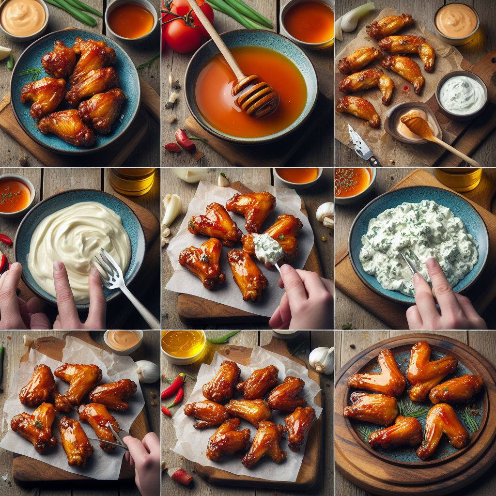

Description
Satisfy your cravings with our Baked Honey-Glazed Chicken Wings recipe. These crispy wings are oven-baked to perfection and coated in a sticky-sweet glaze, making them a crowd-pleasing favorite for any occasion. Whether you're hosting a game day party or simply craving a delicious snack, these honey-glazed wings are sure to hit the spot.
Ingredients
- 2 lbs chicken wings, split at joints, tips removed
- 2 tablespoons olive oil
- Salt and pepper to taste
- ½ cup honey
- ¼ cup soy sauce
- 2 cloves garlic, minced
(Optional, but highly recommended) Blue Cheese Dip
- ½ cup mayonnaise
- ¼ cup sour cream
- 2 tablespoons buttermilk
- 2 ounces blue cheese, crumbled
- 1 tablespoon lemon juice
- Salt and pepper to taste
Instructions

- Preheat the oven to 400°F (200°C) and line a baking sheet with aluminum foil.
- In a large bowl, toss the chicken wings with olive oil, salt, and pepper until evenly coated.
- Arrange the wings in a single layer on the prepared baking sheet and bake for 40-45 minutes, or until golden brown and crispy.
- In a small saucepan, combine honey, soy sauce, and minced garlic. Cook over medium heat for 5 minutes, stirring occasionally, until the glaze thickens slightly.
- Remove the chicken wings from the oven and brush them with the honey glaze. Return to the oven and bake for an additional 5 minutes, or until the glaze is caramelized and sticky.
- Serve the baked honey-glazed chicken wings hot, and enjoy!
Optional Blue Cheese Dip:
- In a medium bowl, whisk together mayonnaise, sour cream, and buttermilk until smooth.
- Stir in crumbled blue cheese, lemon juice, salt, and pepper until well combined.
- Cover and refrigerate for at least 30 minutes before serving to allow the flavors to meld. If you plan to make this dip, you can do so while the chicken wings are baking in the oven
Dig In and Enjoy!
Get ready to feast on these irresistible Baked Honey-Glazed Chicken Wings! Whether you're dipping them in blue cheese or enjoying them on their own, these wings are sure to be a hit. Share your culinary creations with us on social media using #CookWithOdinRecipes. For more mouthwatering recipes and cooking inspiration, explore our recipe collection. Happy cooking!